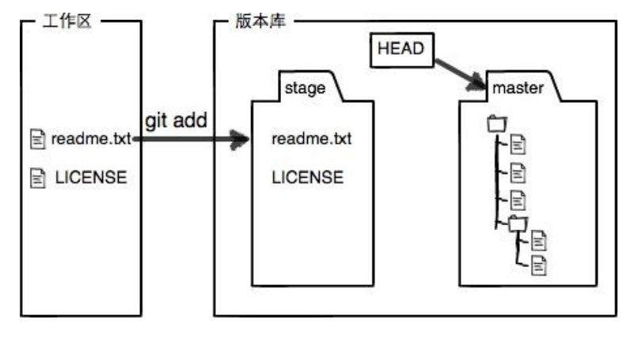

本文首发于gylic，经作者同意后转载。
参考链接: 廖雪峰的Git教程
认识Git、Github与Gitee
一、Git
Git是一个版本控制系统。版本控制系统是设计用于跟踪文件随时间变化状态的一款软件。更具体地说，Git是一个分布式的版本控制系统。这就意味着，在Git中参与项目的每个程序员不仅能拥有文件的当前状态，还能拥有项目完整的历史记录。
1.1 在Windows上安装Git
从Git官网直接下载安装程序，然后按默认选项安装即可。 安装完成后，在开始菜单里找到“Git”->“Git Bash”，蹦出一个类似命令行窗口的东西，就说明Git安装成功！
安装完成后，还需要最后一步设置，在命令行输入：
1 | 1. $ git config --global user.name "Your Name" |
因为Git是分布式版本控制系统，所以，每个机器都必须自报家门：你的名字和Email地址。你也许会担心，如果有人 故意冒充别人怎么办？这个不必担心，首先我们相信大家都是善良无知的群众，其次，真的有冒充的也是有办法可查的。
注意 git config 命令的 --global 参数，用了这个参数，表示你这台机器上所有的Git仓库都会使用这个配置，当然也可以对某个仓库指定不同的用户名和Email地址。一般情况下，你可以在主目录下的.gitconfig里看到上面输入的两行命令。
1.2 使用Git创建版本库
版本库又名仓库，英文名repository，你可以简单理解成一个目录，这个目录里面的所有文件都 可以被Git管理起来，每个文件的修改、删除，Git都能跟踪，以便任何时刻都可以追踪历史，或者在将来某个时刻可 以“还原”。 所以，创建一个版本库非常简单。
首先，选择一个合适的地方，创建一个空目录：
1 | $ mkdir learngit |
pwd 命令用于显示当前目录。在我的Windows上，这个仓库位于 /d/learngit 。使用Windows系统时，为了避免遇到各种莫名其妙的问题，请确保目录名（包括父目录）不包含中文。
第二步，通过 git init 命令把这个目录变成Git可以管理的仓库：
1 | $ git init |
瞬间Git就把仓库建好了，而且告诉你是一个空的仓库（empty Git repository），可以发现当前目录 下多了一个.git 的目录，这个目录是Git来跟踪管理版本库的，没事千万不要手动修改这个目录里面的文件，不然 改乱了，就把Git仓库给破坏了。如果没有看到.git目录，那是因为这个目录默认是隐藏的，在查看方式里勾选隐藏的项目即可。也不一定必须在空目录下创建Git仓库，选择一个已经有东西的目录也是可以的。
1.3 向版本库添加文件
首先这里再明确一下，所有的版本控制系统，其实只能跟踪文本文件的改动，比如TXT文件，网页，所有的程序代码等 等，Git也不例外。要真正使用版本控制系统，就要以纯文本方式编写文件。
因为文本是有编码的，比如中文有常用的GBK编码，日文有Shift_JIS编码，强烈建议使用 标准的UTF-8编码，所有语言使用同一种编码，既没有冲突，又被所有平台所支持。
尽量不要使用Windows自带的记事本编辑任何文本文件。原因是Microsoft开发记事本的团队使用了一个非常弱智的 行为来保存UTF-8编码的文件，他们自作聪明地在每个文件开头添加了0xefbbbf（十六进制）的字符，你会遇到很多不可思议的问题，比如，网页第一行可能会显示一个“?”，明明正确的程序一编译就报语法错误，等等，都是由记事本的弱智行为带来的。建议下载Notepad++代替记事本，不但功能强大，而且免费！把Notepad++的默认编码设 置为UTF-8 without BOM即可：
言归正传，现在我们编写一个 readme.txt文件，内容如下：
1 | Git is a version control system. |
一定要放到 learngit目录下（子目录也行），因为这是一个Git仓库，放到其他地方Git再厉害也找不到这个文件。 和把大象放到冰箱需要3步相比，把一个文件放到Git仓库只需要两步
第一步，用命令 git add 告诉Git，把文件添加到仓库：
1 | $ git add readme.txt |
执行上面的命令，没有任何显示，这就对了，Unix的哲学是“没有消息就是好消息”，说明添加成功。
第二步，用命令 git commit 告诉Git，把文件提交到仓库：
1 | $ git commit -m "wrote a readme file" |
简单解释一下git commit命令， -m后面输入的是本次提交的说明，可以输入任意内容，当然最好是有意义的，这样你就能从历史记录里方便地找到改动记录。
git commit命令执行成功后会告诉你， 1 file changed ：1个文件被改动（我们新添加的readme.txt文件）；2 insertions：插入了两行内容（readme.txt有两行内容）。
为什么Git添加文件需要 add ，commit一共两步呢？因为 commit可以一次提交很多文件，所以你可以多次 add 不同的文件，比如：
1 | $ git add file1.txt |
1.4 文件修改及版本回退
我们已经成功地添加并提交了一个readme.txt文件，现在，是时候继续工作了，于是，我们继续修改readme.txt 文件，改成如下内容：
1 | Git is a distributed version control system. |
现在，运行 git status 命令看看结果：
1 | $ git status |
git status命令可以让我们时刻掌握仓库当前的状态，上面的命令输出告诉我们， readme.txt 被修改过了，但还 没有准备提交的修改。
虽然Git告诉我们 readme.txt被修改了，但如果能看看具体修改了什么内容，自然是很好的。比如你休假两周从国外 回来，第一天上班时，已经记不清上次怎么修改的readme.txt，所以，需要用git diff 这个命令看看：
1 | $ git diff |
git diff顾名思义就是查看difference，显示的格式正是Unix通用的diff格式，可以从上面的命令输出看到， 我们在第一行添加了一个 distributed单词。
知道了对readme.txt 作了什么修改后，再把它提交到仓库就放心多了，提交修改和提交新文件是一样的两步，第一 步是 git add：
1 | $ git add readme.txt |
同样没有任何输出。在执行第二步 git commit 之前，我们再运行 git status 看看当前仓库的状态：
1 | $ git status |
git status 告诉我们，将要被提交的修改包括 readme.txt ，下一步，就可以放心地提交了：
1 | $ git commit -m "add distributed" |
提交后，我们再用 git status 命令看看仓库的当前状态：
1 | $ git status |
Git告诉我们当前没有需要提交的修改，而且，工作目录是干净（working tree clean）的。
再练习一次，修改readme.txt文件如下：
1 | Git is a distributed version control system. |
然后尝试提交：
1 | $ git add readme.txt |
像这样，你不断对文件进行修改，然后不断提交修改到版本库里，就好比玩RPG游戏时，每通过一关就会自动把游戏状 态存盘，如果某一关没过去，你还可以选择读取前一关的状态。有些时候，在打Boss之前，你会手动存盘，以便万一 打Boss失败了，可以从最近的地方重新开始。
Git也是一样，每当你觉得文件修改到一定程度的时候，就可以“保存一 个快照”，这个快照在Git中被称为 commit。一旦你把文件改乱了，或者误删了文件，还可以从最近的一 个 commit 恢复，然后继续工作，而不是把几个月的工作成果全部丢失。
想知道文件一共有几个版本被提交到Git仓库里？在Git中，我们用 git log 命令查看：
1 | $ git log |
git log命令显示从最近到最远的提交日志，我们可以看到3次提交，最近的一次是 append GPL ，上一次是 add distributed，最早的一次是wrote a readme file 。
如果嫌输出信息太多，看得眼花缭乱的，可以试试加上 --pretty=oneline参数：
1 | $ git log --pretty=oneline |
一大串类似3db02ce718d... 的是 commit id （版本号），和SVN不一样，Git的 commit id 不是1，2，3……递增的数字，而是一个SHA1计算出来的一个非常大的数字，用十六进制表示。
现在我们准备把 readme.txt 回退到上一个版本，也就是 add distributed 的那个版本，怎 么做呢？
首先，Git必须知道当前版本是哪个版本，在Git中，用 HEAD 表示当前版本，也就是最新的提交 3db02ce718d... （注意提交ID和你的肯定不一样），上一个版本就是 HEAD^ ，上上一个版本就是 HEAD^^ ，当然往上100个版本写 100个 ^ 比较容易数不过来，所以写成 HEAD~100 。
现在，我们要把当前版本append GPL 回退到上一个版本 add distributed，就可以使用 git reset 命令:
1 | $ git reset --hard HEAD^ |
看看readme.txt的内容是不是版本 add distributed：
1 | $ cat readme.txt |
果然被还原了。此时再看现在版本库的状态：
1 | $ git log |
最新的那个版本append GPL 已经看不到了！好比你从21世纪坐时光穿梭机来到了19世纪，想再回去已经回不去了， 肿么办？
办法其实还是有的，只要上面的命令行窗口还没有被关掉，你就可以顺着往上找啊找啊，找到那个 append GPL的 commit id 是3db02ce718d...，于是就可以指定回到未来的某个版本：
1 | $ git reset --hard 3db02ce718d |
版本号没必要写全，前几位就可以了，Git会自动去找。当然也不能只写前一两位，因为Git可能会找到多个版本号， 就无法确定是哪一个了。 再小心翼翼地看看 readme.txt的内容：
1 | $ cat readme.txt |
果然，又回来了。
假如你回退到了某个版本，关掉了电脑，第二天早上就后悔了，想恢复到新版本但找不到新版本的 commit id怎么办？
在Git中，总是有后悔药可以吃的。当你用 $ git reset --hard HEAD^ 回退到 add distributed版本时，再想恢复 到 append GPL ，就必须找到append GPL的commit id。Git提供了一个命令git reflog用来记录你的每一次命令：
1 | $ git reflog |
终于舒了口气，从输出可知，append GPL 的commit id是 1094adb 。
1.5 Git工作原理
git四大域：工作目录，暂存区，仓库，远程仓库。
git对文件的操作都是在四大域上进行的，文件可以在四大域内与四大域间进行各种操作。（有一个例外，进行“git stash”系列操作时，文件可能被保存到四大域外的堆栈中）
工作区（Working Directory）就是你在电脑里能看到的目录，比如我的 learngit 文件夹就是一个工作区：
版本库（Repository）: 工作区有一个隐藏目录.git ，这个不算工作区，而是Git的版本库。
Git的版本库里存了很多东西，其中最重要的就是称为stage（或者叫index）的暂存区，还有Git为我们自动创建的 第一个分支master ，以及指向 master 的一个指针叫 HEAD 。
前面讲了我们把文件往Git版本库里添加的时候，是分两步执行的：
第一步是用 git add把文件添加进去，实际上就是把文件修改添加到暂存区；
第二步是用 git commit 提交更改，实际上就是把暂存区的所有内容提交到当前分支。
因为我们创建Git版本库时，Git自动为我们创建了唯一一个 master 分支，所以，现在， git commit就是 往 master 分支上提交更改。
可以简单理解为，需要提交的文件修改通通放到暂存区，然后，一次性提交暂存区的所有修改。
俗话说，实践出真知。现在，我们再练习一遍，先对 readme.txt 做个修改，比如加上一行内容：
然后，在工作区新增一个LICENSE文本文件（内容随便写）
先用 git status 查看一下状态：
1 | $ git status |
Git非常清楚地告诉我们， readme.txt 被修改了，而 LICENSE.txt 还从来没有被添加过，所以它的状态 是 Untracked。
现在，使用两次命令 git add，把 readme.txt和LICENSE.txt都添加后，用 git status 再查看一下：
1 | $ git status |
现在，暂存区的状态就变成这样了：

所以，git add命令实际上就是把要提交的所有修改放到暂存区（Stage），然后，执行git commit 就可以一次性 把暂存区的所有修改提交到分支。
1 | $ git commit -m "understand how stage works" |
一旦提交后，如果你又没有对工作区做任何修改，那么工作区就是“干净”的：
1 | $ git status |
现在版本库变成了这样，暂存区就没有任何内容了：
一些小结
Git比其他版本控制系统设计得优秀， 因为Git跟踪并管理的是修改，而非文件。要注意每次修改，如果不用
git add到暂存区，那就不会加入到 commit 中。git checkout -- file可以丢弃工作区的修改：命令git checkout -- readme.txt意思就是，把readme.txt文件在工作区的修改全部撤销，这里有两种情况： 一种是readme.txt自修改后还没有被放到暂存区，现在，撤销修改就回到和版本库一模一样的状态； 一种是readme.txt已经添加到暂存区后，又作了修改，现在，撤销修改就回到添加到暂存区后的状态。 总之，就是让这个文件回到最近一次git commit或git add时的状态。git reset命令既可以回退版本，也可以把暂存区的修改回退到工作区。git reset HEAD可以把暂存区的修改撤销掉（unstage），重新放回工作区
1.6 删除文件
在Git中，删除也是一个修改操作，我们实战一下，先添加一个新文件 test.txt 到Git并且提交：
1 | $ git add test.txt |
一般情况下，你通常直接在文件管理器中把没用的文件删了，或者用 rm 命令删了：
1 | $ rm test.txt |
这个时候，Git知道你删除了文件，因此，工作区和版本库就不一致了， git status 命令会立刻告诉你哪些文件被删 除了：
1 | $ git status |
现在有两个选择，一是确实要从版本库中删除该文件，那就用命令 git rm 删掉，并且 git commit：
1 | $ git rm test.txt |
现在，文件就从版本库中被删除了。
小提示：先手动删除文件，然后使用git rm或git add效果是一样的。
另一种情况是删错了，因为版本库里还有呢，所以可以很轻松地把误删的文件恢复到最新版本
1 | $ git checkout -- test.txt |
git checkout 其实是用版本库里的版本替换工作区的版本，无论工作区是修改还是删除，都可以“一键还原”。
注意：从来没有被添加到版本库就被删除的文件，是无法恢复的！
1.7 远程仓库
有 个叫GitHub的神奇的网站，从名字就可以看出，这个网站就是提供Git仓库托管服务的，所以，只要注册一个 GitHub账号，就可以免费获得Git远程仓库。
由于你的本地Git仓库和GitHub仓库之间的传输是通过SSH加密 的，所以，需要一点设置：
第1步：创建SSH Key。
在用户主目录下，看看有没有.ssh目录，如果有，再看看这个目录下有没 有id_rsa和 id_rsa.pub 这两个文件，如果已经有了，可直接跳到下一步。如果没有，打开Shell（Windows下打 开Git Bash），创建SSH Key：
1 | $ ssh-keygen -t rsa -C "youremail@example.com" |
你需要把邮件地址换成你自己的邮件地址，然后一路回车，使用默认值即可，由于这个Key也不是用于军事目的，所以 也无需设置密码。
如果一切顺利的话，可以在用户主目录里找到 .ssh目录，里面有id_rsa 和id_rsa.pub 两个文件，这两个就是 SSH Key的秘钥对， id_rsa 是私钥，不能泄露出去， id_rsa.pub 是公钥，可以放心地告诉任何人。
第2步：登陆GitHub，打开“Account settings”，“SSH Keys”页面
然后，点“Add SSH Key”，填上任意Title，在Key文本框里粘贴 id_rsa.pub 文件的内容：
点“Add Key”，你就应该看到已经添加的Key。
为什么GitHub需要SSH Key呢？
因为GitHub需要识别出你推送的提交确实是你推送的，而不是别人冒充的，而Git 支持SSH协议，所以，GitHub只要知道了你的公钥，就可以确认只有你自己才能推送。
当然，GitHub允许你添加多个Key。假定你有若干电脑，你一会儿在公司提交，一会儿在家里提交，只要把每台电脑 的Key都添加到GitHub，就可以在每台电脑上往GitHub推送了。
最后友情提示，在GitHub上免费托管的Git仓库，任何人都可以看到喔（但只有你自己才能改）。所以，不要把敏感信息放进去。
如果你不想让别人看到Git库，有两个办法，一个是交点保护费，让GitHub把公开的仓库变成私有的，这样别人就看 不见了（不可读更不可写）。另一个办法是自己动手，搭一个Git服务器，因为是你自己的Git服务器，所以别人也是看不见的。
添加远程库
现在的情景是，你已经在本地创建了一个Git仓库后，又想在GitHub创建一个Git仓库，并且让这两个仓库进行远程 同步，这样，GitHub上的仓库既可以作为备份，又可以让其他人通过该仓库来协作，真是一举多得。
首先，登陆GitHub，然后，在右上角找到“Create a new repo”按钮，创建一个新的仓库。
在Repository name填入 learngit ，其他保持默认设置，点击“Create repository”按钮，就成功地创建了一 个新的Git仓库。
目前，在GitHub上的这个learngit仓库还是空的，GitHub告诉我们，可以从这个仓库克隆出新的仓库，也可以把 一个已有的本地仓库与之关联，然后，把本地仓库的内容推送到GitHub仓库。
现在，我们根据GitHub的提示，在本地的learngit仓库下运行命令：
1 | git remote add origin git@github.com:gylic/learngit.git |
请千万注意，把上面的 gylic 替换成你自己的GitHub账户名，否则，你在本地关联的就是我的远程库，关联 没有问题，但是你以后推送是推不上去的，因为你的SSH Key公钥不在我的账户列表中。 添加后，远程库的名字就是 origin ，这是Git默认的叫法，也可以改成别的，但是 origin 这个名字一看就知道是 远程库。 下一步，就可以把本地库的所有内容推送到远程库上：
1 | $ git push -u origin master |
把本地库的内容推送到远程，用 git push命令，实际上是把当前分支 master 推送到远程。
由于远程库是空的，我们第一次推送master 分支时，加上了-u参数，Git不但会把本地的 master 分支内容推 送的远程新的 master 分支，还会把本地的 master分支和远程的 master 分支关联起来，在以后的推送或者拉取 时就可以简化命令。
推送成功后，可以立刻在GitHub页面中看到远程库的内容已经和本地一模一样。
从现在起，只要本地作了提交，就可以通过命令：
1 | $ git push origin master |
注意
当你第一次使用Git的 clone 或者 push 命令连接GitHub时，会得到一个SSH警告:
1 | The authenticity of host 'github.com (xx.xx.xx.xx)' can't be established. |
这是因为Git使用SSH连接，而SSH连接在第一次验证GitHub服务器的Key时，需要你确认GitHub的Key的指纹信息 是否真的来自GitHub的服务器，输入yes回车即可
Git会输出一个警告，告诉你已经把GitHub的Key添加到本机的一个信任列表里了：
1 | Warning: Permanently added 'github.com' (RSA) to the list of known hosts. |
如果你实在担心有人冒充GitHub服务器，输入 yes前可以对照GitHub的RSA Key的指纹信息是否与SSH连接给出 的一致。
从远程库克隆
1 | $ git clone git@github.com:用户名/仓库名.git |
你也许还注意到，GitHub给出的地址不止一个，还可以用 https://github.com/用户名/仓库名.git这样的地 址。
实际上，Git支持多种协议，默认的 git://使用ssh，但也可以使用 https 等其他协议。
使用 https除了速度慢以外，还有个最大的麻烦是每次推送都必须输入口令，但是在某些只开放http端口的公司内 部就无法使用 ssh协议而只能用https 。
参与开源项目时一定要从自己的账号下clone仓库，这样你才能推送修改。如果从原作者的仓库地 址克隆，因为没有权限，你将不能推送修改。
1.8 创建与合并分支
创建一个属于你自己的分支，别人看不到。你在自己的分支上干活，想提交就提交，直到开发完毕后，再一次性合并到原来的分支上，这样既安全又不影响别 人工作。
首先，我们创建 dev 分支，然后切换到dev分支：
1 | $ git switch -c dev |
git switch命令加上-c参数表示创建并切换，相当于以下两条命令：
1 | $ git branch dev |
然后，用 git branch命令查看当前分支：
1 | $ git branch |
git branch命令会列出所有分支，当前分支前面会标一个* 号。
然后，我们就可以在dev分支上正常提交，比如对readme.txt 做个修改，加上一行：
1 | Creating a new branch is quick. |
然后提交：
1 | $ git add readme.txt |
现在， dev 分支的工作完成，我们就可以切换回 master 分支：
1 | $ git switch master |
切换回 master 分支后，再查看 readme.txt文件，刚才添加的内容不见了！因为那个提交是在 dev分支上， 而master分支此刻的提交点并没有变：
现在，我们把 dev 分支的工作成果合并到master分支上：
1 | $ git merge dev |
git merge命令用于合并指定分支到当前分支。合并后，再查看 readme.txt 的内容，就可以看到，和 dev 分支的 最新提交是完全一样的。
注意到上面的Fast-forward 信息，Git告诉我们，这次合并是“快进模式”，也就是直接把 master 指向 dev 的当 前提交，所以合并速度非常快。
合并完成后，就可以放心地删除 dev分支了：
1 | $ git branch -d dev |
删除后，查看 branch ，就只剩下 master 分支了：
1 | $ git branch |
因为创建、合并和删除分支非常快，所以Git鼓励你使用分支完成某个任务，合并后再删掉分支，这和直接 在master分支上工作效果是一样的，但过程更安全。
查看分支：git branch
创建分支： git branch <name>
切换分支：git checkout <name> 或者git switch <name>
创建+切换分支： git checkout -b <name> 或者git switch -c <name>
合并某分支到当前分支： git merge <name>
删除分支：git branch -d <name>
二、Github
Github是一个提供代码托管服务的网站，你可以向该网站上传一个Git数据库副本。使用Github使你与他人合作一个项目变得更容易，而这归功于Github提供的下述机制：一个用于以共享库的集中位置，一个基于Web的界面以及分叉（forking）、拉请求（pull request）、提出问题（issue）、维基（WiKi）等功能，这些功能使你和你的团队能更有效地对所做的修改进行说明、讨论和评估。
2.1 查看仓库（repository）
以学习菌账户下的RSP仓库为例：
2.2 为一个仓库做贡献
如果想直接对一个项目做出贡献，你必须是项目的拥有者或作为合作者加入项目。若不是，则需要在Github上你的用户账户下复制这个项目。这一过程称为分叉（fork）。一旦你对一个项目进行了分叉操作，你就能对你复制过来的分叉副本做任何修改，同时还可以通过使用拉请求将你的改动纳入原来的项目。现在让我们一起来看一下这个过程。
首先，点击页面右上角的fork。然后你会发现自己多了一个该仓库的副本。
接着就可以对这个仓库的副本进行操作了。
现在，我们先选择一个文件夹，再点击Add file。
然后上传文件，点击Commit changes，将文件同步至仓库。
完成上面的操作后进行Compare。
显示Able to merge，就可以创建拉请求给原作者了。
最后再点击Create pull request，等待作者合并你的拉请求吧。
以上都是在复制过来的副本上进行操作。要注意的是如果原作者的仓库已经更新，那么你必须先保持同步，保持一个好的习惯，定期进行compare。确保自己复制的仓库和原仓库一样，再上传文件并创建pull request，这样可以避免冲突。
2.3 使用Github Desktop
当仓库太大或者要上传的文件太大时，显然通过网页提交pull request是不太可行的。方便的是，有一个叫做Github Desktop的软件可以帮助你。GitHub Desktop 是一个可让您使用 GUI 而非命令行或网络浏览器与 GitHub 交互的应用程序。到官网下载，然后只需简单地配置一下就可以使用。关于Github Desktop如何使用，详细内容可以参考官方文档。
下载完成后，使用Github账号登陆，然后将远程库克隆到本地。当你更改本地仓库或者其他人更改远程仓库时，将项目的本地副本与远程仓库同步。要查看本地副本与远程版本是否同步，只需点击Fetch origin。 GitHub Desktop 可以通过push origin和pull origin来保持项目本地副本与远程版本同步。确认无误后在左下角点commit to master提交到master分支。
这样一来，就可以借助软件来管理仓库了。
小提示：有时会出现冲突，大多数情况下是因为没有和远程版本保持同步就commit。先保持同步再提交。
三、Gitee
使用GitHub时，国内的用户经常遇到的问题是访问速度太慢，有时候还会出现无法连接的情况。 如果希望体验Git飞一般的速度，可以使用国内的Git托管服务——Gitee（gitee.com）。
和GitHub相比，Gitee也提供免费的Git仓库。此外，还集成了代码质量检测、项目演示等功能。对于团队协作开 发，Gitee还提供了项目管理、代码托管、文档管理的服务，5人以下小团队免费。 Gitee的免费版本也提供私有库功能，只是有5人的成员上限。
3.1 配合Git
使用Gitee和使用GitHub类似，我们在Gitee上注册账号并登录后，需要先上传自己的SSH公钥。选择右上角用户头 像 -> 菜单“修改资料”，然后选择“SSH公钥”，填写一个便于识别的标题，然后把用户主目录下 的 .ssh/id_rsa.pub 文件的内容粘贴进去：
如果我们已经有了一个本地的git仓库（例如，一个名为learngit的本地库），如何把它关联到Gitee的远程库上呢？
首先，我们在Gitee上创建一个新的项目，选择右上角用户头像 -> 菜单“控制面板”，然后点击“创建项目”。项目名称最好与本地库保持一致。
然后，我们在本地库上使用命令 git remote add把它和Gitee的远程库关联：
1 | git remote add origin git@gitee.com:liaoxuefeng/learngit.git |
之后，就可以正常地用 git push 和git pull 推送了！
如果在使用命令 git remote add时报错：
1 | git remote add origin git@gitee.com:liaoxuefeng/learngit.git |
这说明本地库已经关联了一个名叫 origin的远程库，此时，可以先用 git remote -v查看远程库信息：
1 | git remote -v |
可以看到，本地库已经关联了 origin 的远程库，并且，该远程库指向GitHub。
我们可以删除已有的GitHub远程库：
1 | git remote rm origin |
再关联Gitee的远程库（注意路径中需要填写正确的用户名）：
1 | git remote add origin git@gitee.com:liaoxuefeng/learngit.git |
此时，我们再查看远程库信息：
1 | git remote -v |
现在可以看到，origin已经被关联到Gitee的远程库了。通过 git push 命令就可以把本地库推送到Gitee上。
有的小伙伴又要问了，一个本地库能不能既关联GitHub，又关联Gitee呢？
答案是肯定的，因为git本身是分布式版本控制系统，可以同步到另外一个远程库，当然也可以同步到另外两个远程 库。
使用多个远程库时，我们要注意，git给远程库起的默认名称是 origin ，如果有多个远程库，我们需要用不同的名 称来标识不同的远程库。
仍然以learngit 本地库为例，我们先删除已关联的名为 origin 的远程库：
1 | git remote rm origin |
然后，先关联GitHub的远程库：
1 | git remote add github git@github.com:michaelliao/learngit.git |
注意，远程库的名称叫 github ，不叫 origin 了。 接着，再关联Gitee的远程库：
1 | git remote add gitee git@gitee.com:liaoxuefeng/learngit.git |
同样注意，远程库的名称叫 gitee ，不叫 origin 。
现在，我们用 git remote -v 查看远程库信息，可以看到两个远程库：
1 | git remote -v |
如果要推送到GitHub，使用命令
1 | git push github master |
如果要推送到Gitee，使用命令：
1 | git push gitee master |
3.2 使用Github Desktop
可以将码云（Gitee）视作国内版的Github，很多操作都是类似的。也可以通过 GitHub Desktop 连接远程仓库。可以好好读一读官方文档。